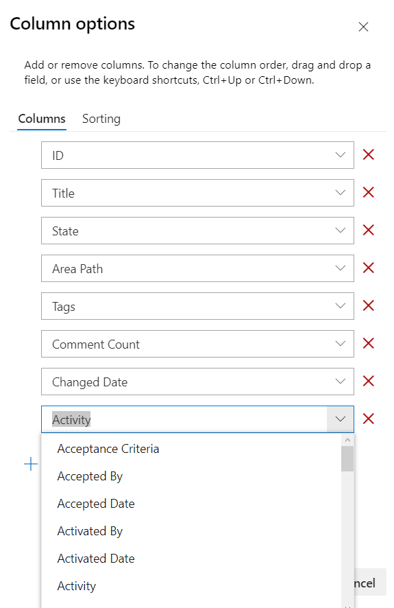

Azure DevOps Boards Sütun Özelleştirmeleri
Azure DevOps Boards'da sütunları özelleştirirken aşağıdaki seçeneklere sahip olabilirsiniz:
- Yeni Sütun Ekleme: Yeni bir sütun oluşturarak çalışma öğelerinin geçebileceği yeni bir aşama ekleyebilirsiniz. Örneğin, "Test Aşaması" veya "Beklemede" gibi bir sütun ekleyebilirsiniz.
- Sütun Sırasını Değiştirme: Mevcut sütunların sırasını değiştirebilirsiniz. Bu, çalışma öğelerinin hangi aşamalardan geçtiğini belirleyen akışı düzenlemenize olanak tanır.
- Sütun Adını ve Açıklamasını Düzenleme: Her sütuna açıklama veya açıklama ekleyerek, bu sütunun neyi temsil ettiğini ve nasıl kullanılması gerektiğini açıklayabilirsiniz. Ayrıca sütun adını da düzenleyebilirsiniz.
- Sütun İçindeki İşleri Özelleştirme: Sütunlarda bulunan iş öğelerinin özelliklerini ve durumunu düzenleyebilirsiniz. Örneğin, bir iş öğesinin önceliğini belirleyebilir veya açıklama ekleyebilirsiniz.
- Sütun İlerlemesini İzleme: Azure DevOps Boards, her bir sütundaki iş öğelerinin ne kadar süreyle orada kaldığını izlemenizi sağlar. Bu, iş akışının optimizasyonu için değerli bilgiler sunar.
Bu seçenekler, Azure DevOps Boards'da çalışma öğelerinin kolayca izlenebilmesini ve yönetilebilmesini sağlar.
